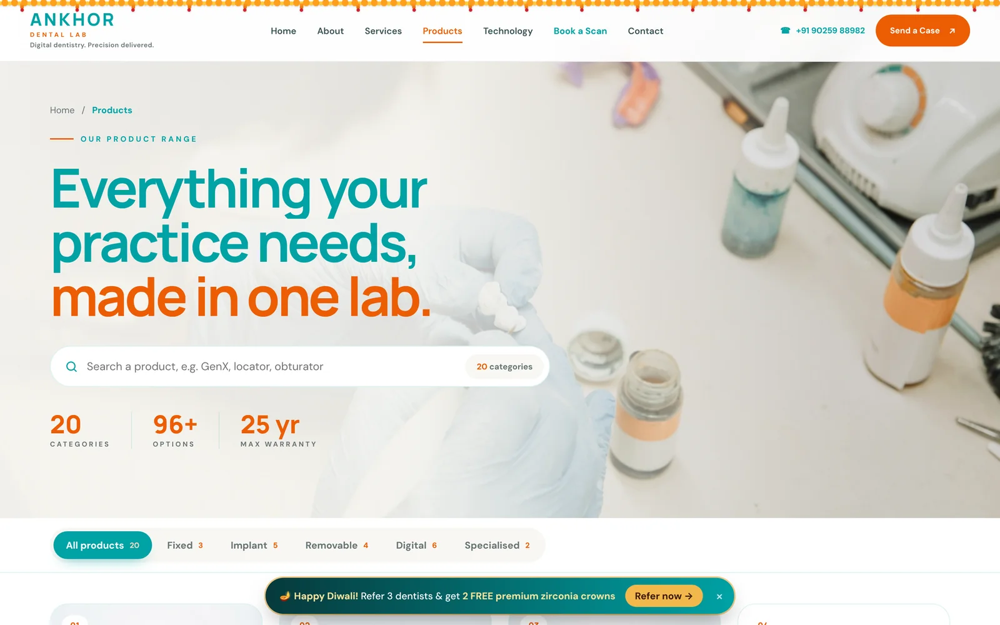
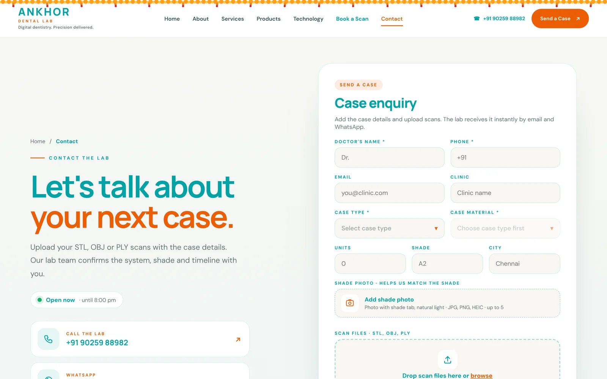
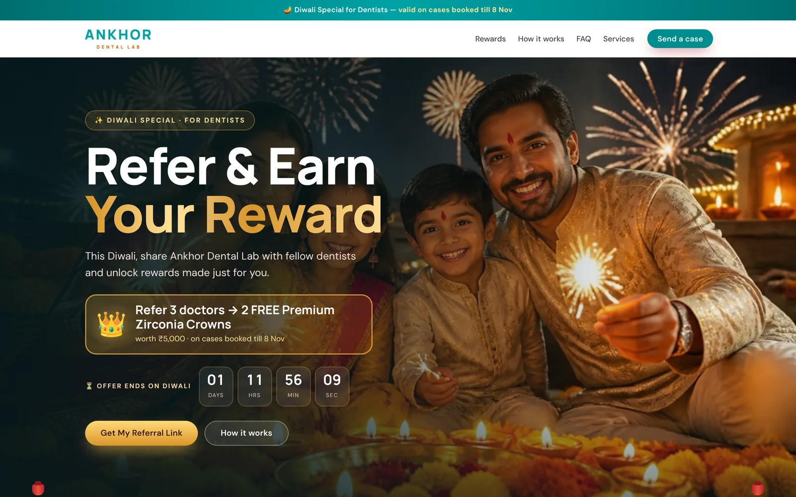
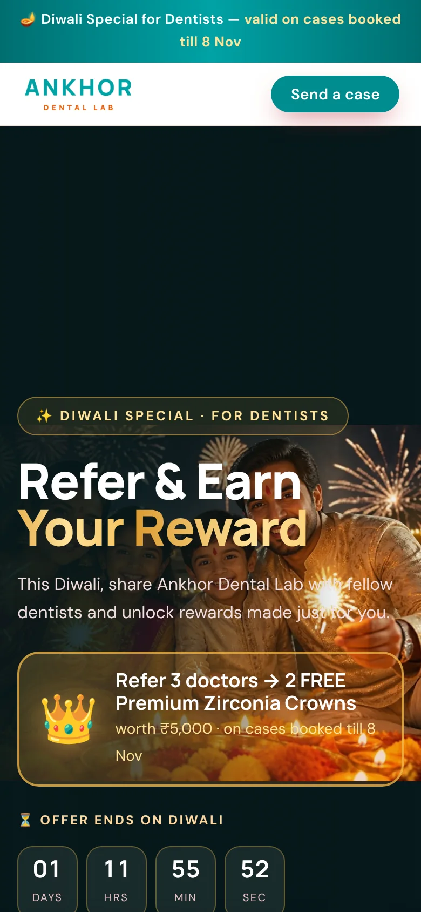

A dental lab runs on cases. Clinics send them, the lab confirms them, makes them and delivers them, and every step used to depend on calls and WhatsApp messages. For Ankhor Dental Lab I built the website and the systems around it: an online case portal with a dashboard, instant email and WhatsApp notifications, a mobile app to check cases, a scan booking platform and a Diwali referral program. Here's how each piece works.
The problem: cases scattered across calls and chats
Clinics sent cases and booked scans through calls and scattered WhatsApp messages. The lab team had no single place to see what was coming in, details had to be copied by hand, and every confirmation was typed again and again.
The website and product catalogue
First, a website that explains what the lab makes and makes it easy to start a case. It covers the lab's services, technology and a full product range with a page for each product, so clinics can find the right restoration and send a case from anywhere on the site.

An online portal to send cases
Clinics send a case from the website: doctor and clinic details, case type and material, units, shade, a shade photo and the scan files (STL, OBJ or PLY). Everything the lab needs arrives in one go, in the same format every time.

Instant email and WhatsApp notifications
As soon as a case is submitted, the lab is notified by email and WhatsApp with the case details. Nobody has to keep checking an inbox or scroll through chats to find out what came in.
A dashboard and a mobile app to track cases
Every case lands in one dashboard where the team can see what has arrived and track it. I also set up a mobile app so the team can check cases from their phone, away from the desk.
A scan booking platform with its own dashboard
For chairside intraoral scanning, clinics book a visit online: they pick a free day and time, add clinic and case details, and the request is saved. Taken slots show as booked straight away, so two clinics can't book the same visit, and the team manages every booking from a dashboard.


A Diwali referral program
For Diwali I built a Refer & Earn page and its dashboard: dentists share their personal referral link, and when three referred doctors send their first case they earn two free premium zirconia crowns. The page has a countdown to the offer's end date, a simple how-it-works section and one-tap sharing on WhatsApp; the dashboard tracks referrals.


What other labs and clinics can copy
Start with the step that wastes the most time, usually receiving cases or bookings, and move it to one online form with every detail you need. Then add instant notifications, then a dashboard. Keep clinics on the channels they already use, like WhatsApp and email, and remove steps instead of adding software.